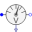
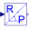

VoltageQuasiRMSSensorLength of space phasor -> RMS voltage |
|
Diagram
{kind=link}
Information
This information is part of the Modelica Standard Library maintained by the Modelica Association.
Measured three-phase instantaneous voltages are transformed to the corresponding space phasor; output is length of the space phasor divided by sqrt(2), thus giving in sinusoidal stationary state RMS voltage.Connectors (3)
| V |
Type: RealOutput |
|
|---|---|---|
| plug_p |
Type: PositivePlug |
|
| plug_n |
Type: NegativePlug |
Components (4)
|  | VoltageSensor1 |
Type: VoltageSensor |
|---|---|---|
| Gain1 |
Type: Gain |
|
| ToSpacePhasor1 |
Type: ToSpacePhasor |
|
|  | ToPolar1 |
Type: ToPolar |
Used in Examples (9)
|
Modelica.Electrical.Machines.Examples.SynchronousMachines Test example: PermanentMagnetSynchronousMachine fed by current source |
|
|
Modelica.Electrical.Machines.Examples.SynchronousMachines Test example: PermanentMagnetSynchronousMachine fed by FOC |
|
|
Modelica.Electrical.Machines.Examples.SynchronousMachines Test example: PermanentMagnetSynchronousMachine acting as brake |
|
|
Modelica.Electrical.Machines.Examples.SynchronousMachines Test example: ElectricalExcitedSynchronousMachine with voltage controller |
|
|
Modelica.Electrical.Machines.Examples.Transformers Transformer test bench |
|
|
Modelica.Magnetic.FundamentalWave.Examples.BasicMachines.SynchronousMachines Test example: PermanentMagnetSynchronousMachine fed by current source |
|
|
Modelica.Magnetic.FundamentalWave.Examples.BasicMachines.SynchronousMachines Test example: PermanentMagnetSynchronousMachine fed by FOC |
|
|
Modelica.Magnetic.FundamentalWave.Examples.BasicMachines.SynchronousMachines Test example: PermanentMagnetSynchronousMachine acting as brake |
|
|
Modelica.Magnetic.FundamentalWave.Examples.BasicMachines.SynchronousMachines Test example: ElectricalExcitedSynchronousMachine with voltage controller |
Used in Components (1)
|
Modelica.Blocks.Examples.Noise.Utilities.Parts Synchronous machine with current controller and measurement noise |